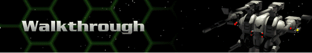

For help on how to use this manual, see Using This Guide.
Click on the introductory video at any time to see the General menu and choose Single Player. Then choose Start Career and Easy for the Difficulty Setting.
You will see a series of three screens which provide background information for your career. Click anywhere on the screen to navigate through the corporate directives. You will find yourself at the Herc Base. This is where you will conduct all operations before and between missions.
Your first assignment is to develop your fleet. You have already been assigned two Hercs and two Bioderms at the rank of Ensign. You also have 10,000 credits to your name and the first mission (Training) is set for you. Let’s take care of this mission first, then we’ll come back to the Herc Base for additional training. Click on the launch pad of the Herc Base or on the Launch Mission text to get underway.
After a couple of cinematic sequences, your next view is an informational screen that tells you the turn number and your mission objective. You will also see a yellow hex with highlighted green and three white marks in the center. The green area is the area of the map that is visible to your Herc’s sensors. The three white marks represent the positions of your Herc Carrier and your two Hercs. Click once anywhere on the screen to descend to the battlefield.
You will see a zoomed-in view of your Remora in the main window. In the upper left portion of the screen you will see a navigational mini-map with four direction buttons around it. Click the lower left button twice to zoom out on the main window. Then use the arrow keys on your keyboard to scroll your view and explore the visible area of the map. Notice how the white rectangle in the mini-map moves with your scroll. You can also do a “sweep view” by clicking and dragging the rectangle in the mini-map. This is more useful when more of the map is revealed.
The message in the main window gives you detailed information about your mission. You must find the remaining structure on this planet and destroy it. The message indicates that it is in the center of the mini-map. Select your Remora (Seiki SunFire) by clicking on it once. Then click once at the center of the mini-map. Your main map view turns black because none of those hexes are visible by your sensors. Click once on a hex at the center of the main map and you will see a row of hexes highlight in green, and possibly red. This represents the movement path of your Herc. Green is within range, red is out of range. Click a second time on the same hex, even if it’s red, to start your Herc’s movement.
If the structure is detected by your sensors, the Herc will discontinue its move. This prevents you from moving right into the path of danger, possibly with no reactor energy left to do anything about it. The idea here is to move as close to the structure as possible to allow you to fire on it, while saving enough reactor energy to move to safety afterward (the structure is armed). Your best bet on this first turn, is to stay about four or five hexes distant from the structure.
First adjust your shields between you and the target to account for return fire. Click once on the Shields button, then click and drag the cursor at the center of the Shields control panel to position your shields between you and the structure. Repeat this for the Fast Shadow. Now, with your Remora selected, target the structure by clicking on it once, then fire by clicking on it a second time. Each subsequent click results in a random firing sequence by all of your weapons. Notice that the structure may return fire. When you have depleted the Remora’s arsenal, repeat these moves with your Fast Shadow. Then select the Move button at the middle left of the screen and click Crouch to place your Fast Shadow in a defensive position. Click once on your Remora and Crouch it as well. Now click End Turn and take the minimal fire that the structure sends your way.
You will notice that your current Bioderm pilots are not very skilled with weapons. Now that you have full reactor power, you can move closer to the structure to fire and still have plenty of energy left to move to safety. But before you continue the combat, let’s check the status of your Hercs and pilots.
Select either Herc and click once on the small wireframe image of it at the bottom center of the screen. This displays the Damage Model. If you’re doing everything right, all components should still be 100%. Damaged components can be repaired back at the Herc Base for now. Later in your career, you may acquire nanorepair technology which will allow you to make repairs directly in the Damage Model you see now.
Click Done to return to the battlefield, then, with your Remora selected, click once on the image of the Bioderm at the bottom right of the screen. This is the pilot status screen which tells you the Health, Stability, and Toxin Levels of your Bioderms. This is also where you temporarily enhance the Skill Ratings of your pilots. Since all of the weapon abilities of both pilots are in dire need of some improvement, take a moment to do so here. Note the Skill Ratings of Protoderm Model 101. Click once on the button labeled Jackup. Notice how her Skill Ratings improve. At the same time her Toxin Level jumps, which lowers her Genetic Stability. Too much of this stuff and your pilot could lose effectiveness or die altogether. Give her a second infusion, then using the arrow keys in the upper left of the screen, scroll to the next pilot and administer two shots of Jackup as well. Then click Done.
Select your Remora and move it to within one hex of the structure. Make sure your shields are still positioned between you and the structure, then empty your arsenal. Repeat all of these moves until the structure is destroyed. Once the structure is destroyed, you may leave the battlefield in one of three ways: choose Leave Battlefield from the Battle pull-down menu; hit Ctrl-X; or return your Hercs to the Herc Carrier by clicking on the Herc Carrier for your last move with each Herc. A message will ask if you want to re-board. When both Hercs are on board, you will receive a Mission Debriefing. Click Done to return to the Herc Base. Congratulations, you have been promoted to the rank of Unit Leader.
Note: If you hang around on this planet long enough after destroying the structure, a solitary Cybrid will eventually find you. If you choose to do combat with it, employ the same tactics as with the structure. Good luck!
The first thing to do while back at the Herc Base is to tend to your fleet. If there is any cost associated with repairing the entire fleet, now is the time to do it while you have the credits. Choose Manage Hercs, click on the Seiki SunFire, then click Repair and Repair Fleet. Click Done twice.
Upon completion of your Training Mission you were given command of four Hercs and four Bioderms, but you only own two of each. Click on Purchase New Herc to purchase another Herc (you will have to earn more credits before you can fulfill your potential command). Select the Fast Shadow, then click Purchase and Done.
You now have to prep your fleet for future successful missions. Go back into the Manage Hercs area. Choose Fast Shadow:1. With your credits at a minimum and with a Bioderm purchase inevitable, you must be frugal with your upgrades at this point. Since all of the weapons are currently sufficient, we’ll upgrade the shields and add an electronic counter measure to this Herc. Under Systems, click on Shield: Shield 300. Select Shield 600 from the list. You can scroll through the description, then click Purchase. Now, click on the first empty slot and scroll to the Single-Band ECM in the Available Components list. Purchase it, then click on the name of the Herc at the top of the screen to rename it anything you like. When you are finished, exit back to the Herc Base Menu.
Now you need a new pilot. Click on the Bioderm Facility, then on Biovat. Here is where you generate Bioderms. Click on the arrow key to the left of the black-and-white Bioderm image until Khadisha appears. Click Create. You can rename any of your Bioderms in any of the other areas of the Bioderm Facility by clicking on their names.
With your remaining credits you can enhance the vital skills of your pilots. Remember that you only have Energy, Cannon and Missile weapons mounted to your Hercs, so those are the only skills you need to worry about. Click on VREC. The pilots skills are shown along with the costs to enhance those skills. Upgrade Khadisha’s Cannon, Energy, and Missile skills until you run out of credits.
Now the pilots must be biomechanically linked with the Hercs. Click on Link and be sure Khadisha’s image is showing. Select Seiki SunFire for Khadisha. Repeat these steps to link the remaining Protoderm with the remaining Fast Shadow. You now have three Hercs equipped and linked to three Bioderms.
The only remaining step is to select your next mission. Back at the Herc Base, click on the Herc Command Center. Note the Career Status information here. Click on Select Mission and select a mining mission.
The Mission Briefing notes explain your objectives and provide you with important planet information. Click on Accept. Now click on the Herc Carrier in the center of the Herc Base to embark on a journey from which very few ever return.